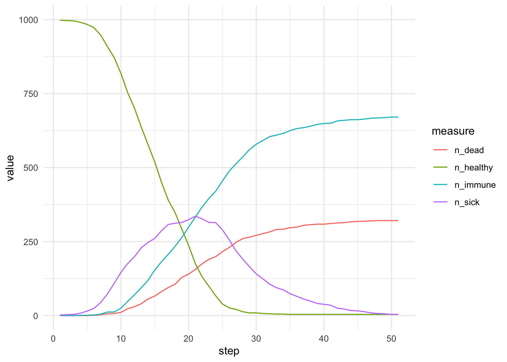

library(R6)
Agent <- R6Class("Agent",
public = list(
state = character(),
initialize = function(state = "healthy") {
self$state <- state
},
update_state = function(sick_prob, recovery_prob, death_prob) {
# If agent is healthy it can either stay healthy or get infected
if (self$state == "healthy") {
new_state <- sample(x = c("healthy", "sick"),
size = 1,
prob = c(1-sick_prob, sick_prob))
# A sick agent can continue being sick, recover and become immune or die
} else if (self$state == "sick") {
new_state <- sample(x = c("sick", "immune", "dead"),
size = 1,
prob = c((1-(recovery_prob + death_prob)), recovery_prob, death_prob))
} else {
new_state <- self$state # Immune and dead states do not change
}
self$state <- new_state # Update state
}
)
)Pest in R using R6 classes
Agent-based simulation of epidemics in R using OOP and R6 classes.
Hello! In this post, I will show you how one can implement an agent-based simulation in R using object-oriented programming paradigm (OOP) and R R6 classes. (
This simulation is working yet it still has to be polished. It has been implemented as a live coding demo during “OOP in R” session at RaukR 2024.
Our goal is to simulate epidemics dynamics on an island (an isolated world). Let us establish some simple rules:
- we have a N x N squartes large rectangular world (think of each square as of, e.g. a building)
- in each square dwell individuals that can be: healthy, immune (after recovering or vaccination), infected (= sick) or, unfortunately, also dead
- in total, we have P individuals randomly distributed in our world’s squares
- at every time step/round of our simulation individuals move and update their state
- probability of becoming infected is proportional to the number of already infected individuals in the same square
- probabilities of the remaining state transitions are given by simulation parameters
- we continue the simulation for T rounds
An individual
Let’s begin by formulating an R6 class that represents an individual (= agent):
Observe that:
- The default state of a new agent is “healthy”
- We use
sampleand itsprobargument to sample agent’s fate according to provided probabilities - “immune” and “dead” states do not change
- when an individual is sick it can either continue to be sick, recover and become immune or die
- we are using the fact that probabilities of mutually exclusive elementary events sum to 1
Simulation world
Now it is time to create a class for our world which we can next populate with our agents. We need the following:
- variable
sizewhere we store information about our world size N, - variable
worldwhich will store our representation of the world. Since the world is a square, we can use R base data structure – matrix and each cell in the matrix will contain a list of our individuals that dwell there – they are of classAgentthat we have just created - method
initializethat creates the world - method
add_agentto populate our world - method
move_agentto move agents around at each simulation step - method
update_statesthat updates states of agents - method
get_countsthat will record current state of the world (count of healthy, sick etc.)
World <- R6Class("World",
public = list(
size = NULL,
world = NULL,
initialize = function(size) {
self$size <- size
self$world <- matrix(vector("list", size * size), nrow = size, ncol = size)
for (i in 1:size) {
for (j in 1:size) {
self$world[[i, j]] <- list()
}
}
},
add_agent = function(row, col, agent) {
self$world[[row, col]] <- c(self$world[[row, col]], list(agent))
},
move_agents = function() {
new_world <- matrix(vector("list", self$size * self$size), nrow = self$size, ncol = self$size)
for (i in 1:self$size) {
for (j in 1:self$size) {
agents <- self$world[[i, j]]
for (agent in agents) {
if (agent$state != "dead") { # dead do not move
move <- rnorm(2, mean = 0, sd = 1) # some arbitrary motility
new_row <- min(max(1, round(i + move[1])), self$size)
new_col <- min(max(1, round(j + move[2])), self$size)
new_world[[new_row, new_col]] <- c(new_world[[new_row, new_col]], list(agent))
} else {
new_world[[i, j]] <- c(new_world[[i, j]], list(agent))
}
}
}
}
self$world <- new_world
},
update_states = function(beta, recovery_prob, death_prob) {
# Iterate over all grid cells in the world and
# determine infection probability based on
# the number of already sick individuals in that grid cell.
for (i in 1:self$size) {
for (j in 1:self$size) {
agents <- self$world[[i, j]]
num_sick <- sum(vapply(agents, function(agent) agent$state == "sick", logical(1)))
# Now, probability of becoming sick is naively proportional
# to the percentage of already sick individuals in the cell
# where beta is the transmission probability
sick_prob <- 1 - ((1 - beta) ^ num_sick)
for (agent in agents) {
agent$update_state(sick_prob, recovery_prob, death_prob)
}
}
}
},
get_counts = function() {
counts <- data.frame(
row = integer(),
col = integer(),
healthy = integer(),
immune = integer(),
sick = integer(),
dead = integer()
)
for (i in 1:self$size) {
for (j in 1:self$size) {
agents <- self$world[[i, j]]
counts <- rbind(counts, data.frame(
row = i,
col = j,
healthy = sum(vapply(agents, function(agent) agent$state == "healthy", logical(1))),
immune = sum(vapply(agents, function(agent) agent$state == "immune", logical(1))),
sick = sum(vapply(agents, function(agent) agent$state == "sick", logical(1))),
dead = sum(vapply(agents, function(agent) agent$state == "dead", logical(1)))
))
}
}
return(counts)
}
)
)
Tip
One line of code is probably a bit non-intuitive:
sick_prob <- 1 - ((1 - beta) ^ num_sick)Here, parameter beta (\(\beta\)) is the so-called transmission probability that is specific for each disease agent. Now, \(P({not\_sick}) = (1 - \beta)^{N_{sick}}\) is the probability of NOT catching the disease from any of \(N_{sick}\) neighbors. Finally, the chance of becoming sick in a given cell is \(P_{sick} = 1 - P({not\_sick}) = 1 - (1 - \beta)^{N_{sick}}\)
Auxiliary functions
I have written a function that visualizes states of our world as the simulation goes on using ggplot2 and gganimate packages. Here is the code:
visualize_simulation <- function(results) {
p <- ggplot(results, aes(x = col, y = row)) +
geom_tile(aes(fill = sick)) +
scale_fill_gradient(low = "white", high = "red") +
theme_minimal() +
labs(title = "Disease Spread Simulation", x = "X", y = "Y", fill = "Sick Individuals") +
transition_states(step, transition_length = 2, state_length = 1) +
ease_aes('linear') +
ggtitle('Disease Spread Simulation - Generation {closest_state}') +
theme(plot.title = element_text(size = 16, face = "bold", hjust = 0.5))
animate(p, nframes = length(unique(results$step)), fps = 2, renderer = gifski_renderer())
}Running simulation
Now, we need a function that will enable us to run the simulation:
library(ggplot2)
library(gganimate)
library(progress)
run_simulation <- function(size, num_steps, initial_immune, initial_sick, beta, recovery_prob, death_prob) {
stopifnot(recovery_prob + death_prob <= 1) # some simplistic input validation
pb <- progress_bar$new(total = num_steps + 1)
world <- World$new(size)
# Initialize agents
if (initial_healthy > 0) {
for (i in 1:initial_healthy) {
row <- sample(1:size, 1)
col <- sample(1:size, 1)
world$add_agent(row, col, Agent$new())
}
}
# Introduce immune and sick agents
if (initial_immune > 0) {
for (i in 1:initial_immune) {
row <- sample(1:size, 1)
col <- sample(1:size, 1)
world$add_agent(row, col, Agent$new(state = "immune"))
}
}
if (initial_sick > 0) {
for (i in 1:initial_sick) {
row <- sample(1:size, 1)
col <- sample(1:size, 1)
world$add_agent(row, col, Agent$new(state = "sick"))
}
}
results <- list()
# Save the initial state of the world
counts <- world$get_counts()
counts$step <- 1
results[[1]] <- counts
# Simulate one generation
for (step in 2:num_steps + 1) {
world$update_states(beta, recovery_prob, death_prob)
world$move_agents()
counts <- world$get_counts()
counts$step <- step
results[[step]] <- counts
pb$tick()
}
results <- do.call(rbind, results)
return(results)
}Finally, we can run our simulation:
library(tidyverse)── Attaching core tidyverse packages ──────────────────────── tidyverse 2.0.0 ──
✔ dplyr 1.1.4 ✔ readr 2.1.5
✔ forcats 1.0.0 ✔ stringr 1.5.1
✔ lubridate 1.9.3 ✔ tibble 3.2.1
✔ purrr 1.0.2 ✔ tidyr 1.3.1
── Conflicts ────────────────────────────────────────── tidyverse_conflicts() ──
✖ dplyr::filter() masks stats::filter()
✖ dplyr::lag() masks stats::lag()
ℹ Use the conflicted package (<http://conflicted.r-lib.org/>) to force all conflicts to become errors# Parameters
size <- 20 # World size
num_steps <- 50 # Number of generations
initial_healthy <- 998
initial_immune <- 0
initial_sick <- 2
beta <- 0.5 # Transmission probability
recovery_prob <- 0.1
death_prob <- 0.05
# Run the simulation
results <- run_simulation(size, num_steps, initial_immune, initial_sick, beta, recovery_prob, death_prob)
results |> group_by(step) |>
summarise(n_sick = sum(sick), n_healthy = sum(healthy), n_immune = sum(immune), n_dead = sum(dead)) |>
pivot_longer(starts_with("n_"), names_to = 'measure') |>
ggplot(aes(x = step, y = value, col=measure)) + geom_line() + theme_minimal()